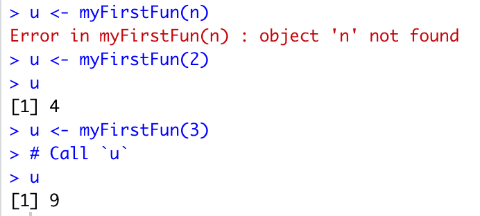

x <- 7
if (x > 5) {
message("Yay!")
}Yay!This lesson provides an introduction to core programming concepts: control flow structures (including loops) and functions.
After this lesson, you should be able to:
Control flow structures are computer programming commands that change the order in which code runs (the flow of control in the program). Specifically, control flow structures can check conditions, such as the value of a variable, to decide what code to run next. They can also run a section of code more than once.
For example, you might want to call one function if the value stored in the variable x is greater than 5 and a different function if it is less than 5.
The Wikiversity Control Structures page contains a good description of control flow structures that is not specific to any particular programming language.
For complete documentation on control flow structures in R, see the Control Flow chapter in Advanced R. You can also get more details from the R control flow help page:
?ControlThe sections that follow provide examples of the most frequently used R control structures and how to implement them.
An if-expression runs some code only if a particular condition is met.
For example, suppose we want R to print Yay! only if the value of the variable x is greater than 5. We can write an if-expression in R with the if keyword:
x <- 7
if (x > 5) {
message("Yay!")
}Yay!When the condition is not met, R does not call the message function and nothing is printed.
More generally, the syntax for if-expressions is:
if (condition) {
# Code to run if condition is true
}This is a fairly universal control flow structure across programming languages, setting aside minor differences in syntax. In R, the condition must be an expression that evaluates to a single logical (TRUE or FALSE) value. The code to run when the condition is TRUE is placed between curly brackets {} following the condition.
The most common conditions evaluate whether one value is equal to (x == y), equal to or greater than (x => y), equal to or lesser than (x <= y), greater than (x > y), or lesser than (x < y) another value.
Control structures in R also have a negation symbol which allows you to specify a negative condition. For example, the conditional statement in the following code evaluates to TRUE (meaning any code placed between the curly brackets will be executed) if the x IS NOT EQUAL to 5:
if (x != 5) { #do something}An if-else-expression is an extension of an if-expression that allows you to also specify some code to run only if the condition evaluates to false.
For example:
x <- 2
if (x > 5) {
print("Yay!")
} else {
print("Boo!")
}[1] "Boo!"The R function ifelse is similar to an if-else-expression, but operates element-by-element on vectors. The condition should be a logical vector with multiple elements. For example:
x <- c(0, 1, -1, 2)
ifelse(x <= 0, "non-positive", "positive")[1] "non-positive" "positive" "non-positive" "positive" If you only need to test a single condition, it is clearer and more efficient to use an if-else-expression than to use ifelse.
A switch-expression provides a way to select from multiple values based on an index value. In R, switch is a function that returns one of its arguments based on the value of its first argument. For example, the following code returns the value of the argument at position x + 1 (the + 1 is because switch never returns its first argument):
x <- 3
switch(x, "red", "green", "blue")[1] "blue"Note: if you pass switch a value that exceeds the number of elements listed, R will not compute a reply.
which FunctionThe which function returns the integer positions of all TRUE values in a logical vector.
For example, suppose we want to check which cars in R’s built-in mtcars data set have engines with more than 4 cylinders:
which(mtcars$cyl > 4) [1] 1 2 4 5 6 7 10 11 12 13 14 15 16 17 22 23 24 25 29 30 31R and many packages have built-in data sets. To list them all, run data() in the R console.
A loop is a specific type of control flow structure that repeatedly runs a specified operation either for a set number of iterations or until some condition is met. For example, you might want your code to perform the same math operation on all of the numbers stored in a vector of values; or perhaps you want the computer to look through a list until it finds the first entry with a value greater than 10; or, maybe you just want the computer to sound an alarm exactly 5 times. Each of these is a type of iteration or “Loop” as they are also commonly called.
The most common type of loop is the for-loop, typically written for x in xs, which iterates through and does something with each element x of a vector xs. In R, for-loops have the following syntax:
for (x in xs) {
# Code to do something for each element x
}For example, assume that names is a vector containing the following four names: Sue, John, Heather, and George, and that we want to print each of these names to screen. We can do so with the following code:
names <- c("Sue", "John", "Heather", "George")
for (name in names) {
message(name)
}SueJohnHeatherGeorgeIn the first line of code, we create our vector of names names. Next, we begin our for-loop.
Beginning with the first element of names (which is Sue), for each iteration of the for-loop the value of the corresponding element in names is assigned to the variable name and then name can be acted upon in the code included between the curly brackets. In our case we tell the computer to print the value of name to the screen. With each iteration, the next value in our vector is assigned to name and is subsequently printed to screen.
In R, for-loops can iterate over the elements of any object with elements, not just vectors.
In some cases, we just want to run a chunk of code a designated number of times. To do this, we can use the : operator to create a vector numbers that “counts off” the iterations. For example, the following code will print “Hello World!” to screen exactly 5 times:
for (i in 1:5) {
message("Hello World!")
}Hello World!
Hello World!
Hello World!
Hello World!
Hello World!Unlike a for-loop, which iterates a fixed number of times based on the length of the provided vector, a while-loop continues to iterate forever as long as (while) a condition is met.
For example, assume you have a variable x with value TRUE. You might want to run a chunk of code repeatedly until the value of x is changed to FALSE. A good example of this is a case where your program asks the user to enter data, which can then be evaluated for correctness before the you allow the program to move on in its execution.
In the example below, we ask the user to tell us the secret of the universe. If the user gives the correct answer 42, the program moves on. But if the user provides an incorrect answer, the program jumps back to the beginning of the loop and asks for input again.
response <- 0
prompt <- "What is the answer to the Ultimate Question of Life, the Universe, and Everything? "
while (response != 42) {
response <- as.integer(readline(prompt = prompt))
}break KeywordA repeat-loop is a special case of a while-loop where no condition is specified. This means the repeat-loop will continue iterating forever unless you specifically write code to exit the loop.
In R, you can use the break keyword to immediately exit a loop, skipping any remaining code and iterations. Generally, you’ll want to put break in a conditional expression, so that the loop can run for more than one iteration.
In the example below, we assign the value 1 to a variable i and then iterate over code that prints and then increments the value of i. In each iteration, the also code checks whether i exceeds 5, at which point we use break to exit the loop.
i <- 1
repeat {
message(i)
i <- i + 1
if (i > 5){
break
}
}12345The break keyword can actually be used inside any kind of loop (for-, while-, and repeat-) in order to force an exit. This can be useful in a variety of contexts where you want to test for multiple conditions as a means of stopping iteration.
next KeywordThe next keyword is similar to break in that it can be used inside any loop to force R to immediately jump to the next iteration, skipping any remaining code for the current iteration.
For example, we use next below to iterate through the numbers 1 to 5 and print all values to screen EXCEPT the value 2:
for (i in 1:5) {
if (i == 2){
next
}
message(i)
}1345In the section on for loops above, we learned that you can use a for-loop to iterate over each element of vector. You can also use for-loops to iterate over data frames, since they also have elements. Because R was developed as a programming language for statistical analysis, and statisticians are often interested in summarizing or transforming all observations of a given variable, (for example, all of the weights recorded across all patients), the “elements” of a data frame are actually the columns (variables) rather than the rows (observations).
Try running this example:
for (x in mtcars) {
message(x)
}In the first iteration, R will assign the vector of values in the first column (mpg) to x, in the second iteration it will assign the vector of values in the second column (cyl) to x, and so on for each column.
Iterating through the columns of a data frame is useful for many (if not most) operations. However, there are times when we want to iterate through data one observation at a time. To accomplish this, we need to specifically direct R to move through the data frame by row, as follows:
for (i in 1:nrow(mtcars)) {
row <- mtcars[i, ]
message(row)
}lapply FunctionR has a built-in family of functions known as the apply functions that provide a shorthand for iterating over elements in containers. These are similar to for-loops, but are typically much more concise.
The fundamental apply function is lapply. The lapply function calls another function on each element of a vector or other container, and returns the results in a list of the same length as the original vector.
In the code below, we assign the values 1 through 10 to a vector and then use lapply to subtract 1 from each element. We then print out the results:
v <- 1:10
results <- lapply(v, function(x) (x - 1))
message(results)0123456789This is similar to the following for-loop:
v <- c(1:10)
for (i in v) {
x <- i - 1
message(x)
}0123456789The basic syntax of lapply is:
lapply(DATA, FUNCTION)where DATA is a container to iterate over and FUNCTION is a function to call on each element. You’ll learn more about functions in the next section.
Why build code several or a hundred times when you can build it once and then call and run it as many times as you want? The answer is, don’t! A function allows you to perform an action multiple times in R by calling it and applying it in similar contexts.
For instance, if you build a function that checks the class of all vectors in a data frame, you can name this function and then apply it to do the same operation with any other data frame. Or, if you build a function that graphs the correlation between two numeric vectors and exports this graph to a .png file, you can call this same function and apply it to two other vectors, again and again as needed. Functions can greatly increase the efficiency of your programming, and allow you to create flexible and customized solutions.
You can define a your own functions in R with the following syntax:
FUNCTION_NAME <- function(PARAMETER_1, PARAMETER_2, ...) {
# Code to run when the function is called
}What this does not demonstrate is that there are actually two steps to a function: building it and calling it. We will look at both steps in the following code from DataCamp:
The code chunk builds the function, setting myFirstFun as the name, or variable, to which they have assigned the function. The function itself runs from the word function down through the closing curly brace.
myFirstFun <- function(n)
{
# Compute the square of integer `n`
n * n
}What is a parameter? In the above example, n is the only parameter.
When we run the above code, the function is saved as an object into the global environment so that it can be called elsewhere, as demonstrated in the code chunks below.
The function has no effect unless you apply it. Until that happens, the function will do nothing but wait to be called.
The code chunk below calls myFirstFun and tells R to assign the results of the operation the function performs (n * n) to the variable u.
We can apply this function by setting n as a number, such as 2, as in the example below:
# Call the function with argument 2
u <- myFirstFun(2)
u[1] 4Once we have set n to a number, R then performs this operation and saves the result to a new variable u. We can then ask R to tell us what u is, and R returns or prints the results of the function, which in this case, is the number 4 (2 * 2).
The image below shows the results we get if we attempt to run the function without changing the argument n to a number (giving us an error), and the results when we set n to the number 2, which assigns the result of the function (4) to u, or the number 3 which assigns the result of the function (now 9) to u.
